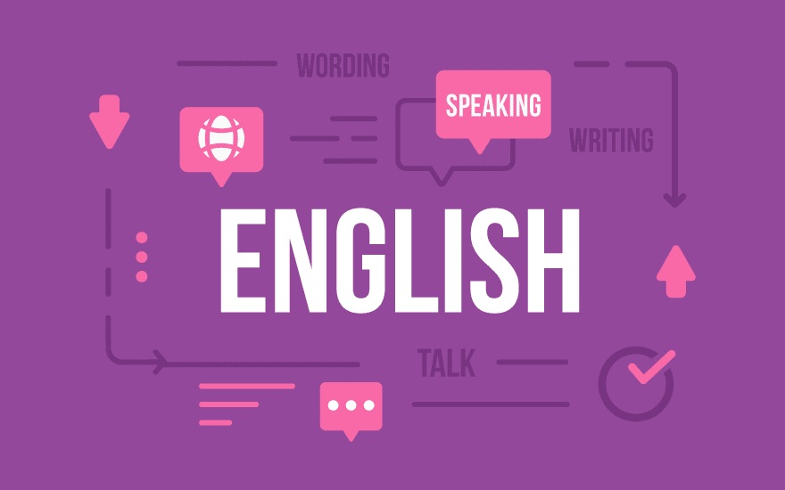

About Me:
My name is Manoj, and I am a skilled Java Full Stack Developer with 1.8 years of professional experience.
I have a strong foundation in Java development and have successfully cleared the Oracle Certified Associate, Java
SE 8 Programmer exam, showcasing my proficiency in the Java programming language.
Throughout my career, I have honed my skills in both front-end and back-end development, allowing me to work
seamlessly across the entire software development lifecycle.
On the front-end, I am proficient in HTML, CSS, and JavaScript, and have experience in developing responsive and
user-friendly web applications.
I have expertise in frameworks like Angular and React, enabling me to build dynamic and interactive user
interfaces.
On the back-end, I excel in Java programming, utilizing frameworks such as Spring and Hibernate to create robust
and scalable applications.
I have a deep understanding of database management systems, including SQL, and have worked with Oracle databases
extensively.
Additionally, I am familiar with RESTful APIs and have experience integrating various third-party services into
applications.
In addition to my technical skills, I am a dedicated and detail-oriented professional.
I have a strong problem-solving aptitude and a passion for delivering high-quality solutions.
I am a quick learner and adapt easily to new technologies and frameworks, allowing me to stay up-to-date with the
latest industry trends.
Overall, I am a Java Full Stack Developer with a solid foundation in Java programming, front-end development, and
back-end development.
With my skills, certification, and professional experience, I am confident in my ability to contribute to the
success of any software development project or team.
Education:
Bachelor of Engineering In Electrical and Electronics Engineering,
Visvesvaraya Technological University, JNN College of Engineering
CGPA: 7.41
Certificates:
Oracle Certified Associate, Java SE 8 Programmer
languages:

Projects:
FruiteShop
Description: Created the Website Having one Admin where he can add any number of various items of fruits. He
can display on his website along with the amount per Kg where the visitor can see, and also the admin can manage
by adding or deleting the particular field.
Github: Click here
VisitorManagment System
Description: Created the website having two interacting portals Admin as well as a visitor where visitors can
add particular dates along with his/her details. These requests are visible in the admin portal where the admin
can only modify the details, and visitors should register and login to that site.